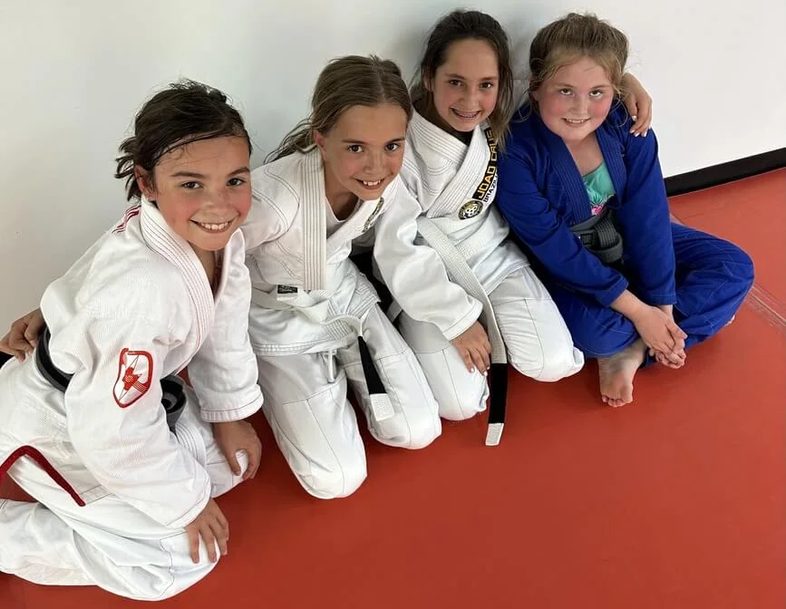

CONFIDENCE ISN'T BEING THE LOUDEST.
Kids build it the quiet way: trying something hard, getting coached, and getting another try.
Youth BJJ · Ages 8–12 · Dripping Springs + Austin
Jiu-jitsu gives kids a safe, coached place to face challenges, solve problems and learn to handle pressure. The CALM Method teaches Control, Awareness, Limits and Movement, one class at a time.
60-second quiz · First class free · No experience needed

Why parents choose jiu-jitsu
We don't teach kids to look for fights. We teach them what to do when things get uncomfortable. Some kids give up when something gets hard; some freeze or push too hard. On the mat, every challenge is a chance to stop, reset, solve a problem and try again, with a coach right there.
Kids build it the quiet way: trying something hard, getting coached, and getting another try.
A position doesn't work. They breathe, listen, adjust and go again. Week after week.
From the first class, kids learn the rules that keep training safe and partners respected.
How kids practice
CALM is how Joao Crus BJJ teaches kids to handle pressure. Coaches use the same four words in class, so your child can tell you what they worked on.
Control yourself first.
Kids practice managing their body, energy and reactions, even when something isn't going their way.
Notice before reacting.
Paying attention to their partner, their position and the coach's instructions.
Boundaries, theirs and their partner's.
Tap means stop. Partners deserve respect. Strength comes with responsibility.
Learn what their body can do.
Age-appropriate drills and techniques that build coordination, balance and strength.
Two locations, one way of teaching
Pick whichever fits your family's week. The quiz asks which location you prefer and sends the matching booking link.
120 Frog Pond Lane, Suite 200
Dripping Springs, TX 78620
Mon + Wed · 5:50–6:35 p.m.
Directions1112 N Lamar Blvd
Austin, TX 78703
Tue + Thu · 5:00–5:45 p.m.
DirectionsHave a younger or older child too? Little Champions starts at age 3, and teens have their own path. The quiz covers siblings.
Not sure where your child should begin? Answer a few quick questions about age, experience and location.
Find my child's starting pointThe first class
It's built for beginners. A first-ever sport or first time on the mat is a normal place to start.
Arrive 10 minutes early in comfortable clothes. We'll have a trial uniform ready.
Parents are welcome to stay and watch the whole class.
A coach walks your child through the basics and pairs them with a partner.
They'll hear the CALM words from day one, starting with tap means stop.

Founded by Joao Crus
Joao Crus has taught Brazilian Jiu-Jitsu since founding his academy in 2003. His Carlson Gracie and Ricardo De La Riva lineages shape an approach built on position, timing, efficiency and control.
For kids, control isn't domination. It's knowing how to stop, reset, respect a partner, listen to coaching and try a better answer. That's where the CALM Method comes from.
About 60 seconds
Answer a few practical questions and get the right class for your child's age and your location, plus a link to book it.
Age, experience and what you'd like jiu-jitsu to help with.
We text and email you a link to book it.
Nothing is charged. Stay and watch.
Parent questions
No. A first-ever sport or first time on the mat is a normal starting point.
Our approach is strong, not aggressive. Limits is one of the four CALM pillars: kids learn that tap means stop, partners deserve respect and strength comes with responsibility.
That's common at a first class. Parents can stay and watch, and coaches keep the first class simple and low-pressure.
Whichever fits your schedule. Dripping Springs trains Mon/Wed at 5:50 p.m.; Austin trains Tue/Thu at 5:00 p.m. Both teach the CALM Method.
No. It recommends a class and sends you a link to book your child's free first class. No payment is collected.
A clear first step
Answer a few quick questions and we'll send you a link to book a youth class in Dripping Springs or Austin.